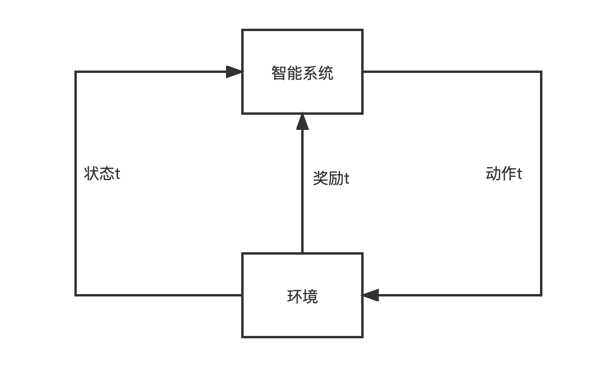

1.统计学习
统计学习
统计学习的概念
统计学习是关于计算机基于数据构建概率统计模型并运用模型对数据进行预测和分析的一门学科，统计学习也称为统计机器学习。
统计学习对象
统计学习研究的对象是数据。它从数据出发，提取数据特征，抽象出数据模型，发现数据中的知识，又回到数据的分析和预测中去。统计学习对于数据的假设是同类数据具有一定的统计规律性，这是统计学习的前提。由于数据具有统计规律，所以可以用概率统计方法处理它们，使用随机变量描述数据的特征，使用概率分布描述数据的统计规律
统计学习的目的
统计学习用于对数据的预测和分析，特别是对未知数据的预测和分析，这些是通过构建概率统计模型来实现的。统计学习总的目标是考虑学习什么样的模型和如何学习模型，以使模型对数据进行准确的预测和分析，同时也要尽可能的考虑学习效率
统计学习的方法
统计学习的方法是基于数据构建概率统计模型从而对数据进行预测和分析。统计学习由监督学习（supervised learning），无监督学习(unsupervised learning)和强化学习(reinforcement learning)组成。
统计学习方法可以概括为：从给定的、有限的、用于学习的训练数据集合出发，假设数据是独立同分布产生的；并且假设要学习的模型属于某个函数的集合，称为假设空间；应用某个评价准则，从假设空间选取一个最优模型，使它对已知的训练数据及未知的测试数据在给定的评价准则下有最优的预测；最优模型的选取由算法实现。这样统计学习方法包括模型的假设空间、模型选择的准则以及模型学习的算法。称其为统计学习的三要素，简称为模型、策略和算法
统计学习方法的步骤:
- 得到一个有限的训练数据集合；
- 确定包含所有可能的模型的假设空间，即学习模型的集合；
- 确定模型选择的准则，即学习的策略
- 实现求解最优模型的算法，即学习的算法
- 通过学习方法选择最优模型
- 利用最优模型对新数据进行预测和分析
统计学习分类
统计学习或机器学习一般包括监督学习、无监督学习、强化学习。有时还包括半监督学习、主动学习
| 类别 | 问题定义 | 本质 | 输入空间 |
输出空间 |
概率模型形式 | 非概率模型形式 |
|---|---|---|---|---|---|---|
| 监督学习 | 从标注数据中学习预测模型的机器学习问题 | 学习输入到输出的映射的统计规律 | ||||
| 无监督学习 | 从无标注数据中学习预测模型的机器学习问题 | 学习数据的内在结构和统计规律 | 或 | |||
| 强化学习 | 智能系统在与环境的连续互动中学习最优行为策略的机器学习问题 | 学习最优的序贯决策 | ||||
| — | — | — | — | — | — |
监督学习和无监督学习
在监督学习和无监督学习中输入变量和输出变量或有不同的类型，可以是连续的，也可以是离散的。根据输入和输出的不同类型划分为不同的任务：
- 输入变量和输出变量均为连续变量的预测问题称为回归问题；
- 输出变量为有限个离散变量的预测问题称为分类问题；
- 输入变量和输出变量均为变量序列的预测问题称为标注问题
监督学习和无监督学习分为学习和预测两个过程，由学习系统与预测系统完成。以监督学习为例，在学习过程中，学习系统利用给定的训练数据集，通过学习（或训练）得到一个模型，表示为条件概率分布或决策函数。条件概率分布或决策函数描述输入与输出随机变量之间的映射关系。在预测过程中，预测系统对于给定的测试样本集中的输入，由模型或 给出相应的输出 。无监督学习也是同样的流程，先通过训练数据学习概率分布或者决策函数，然后在新的数据上进行预测。
强化学习
强化学习的学习过程是不断与环境进行交互，在每一步,智能系统从环境中观测到一个状态(state) 与一个奖励(reward) , 采取一个动作(action) 。环境根据智能系统选择的动作，决定下一步的状态与奖励。要学习的策略表示为给定的状态下采取的动作。智能系统的目标不是短期奖励的最大化，而是长期累积奖励的最大化。强化学习过程中，系统不断地试错（trial and error），以达到学习最优策略的目的。

图1 智能系统与环境的互动
强化学习的马尔可夫决策过程是状态，奖励，动作序列上的随机过程，由五元组表示：
- 是有限状态的集合
- 是有限动作的集合
- 是状态转移概率的函数
- 是奖励函数:
- 是衰减系数:
价值函数或者状态价值函数定义为策略的从某一个状态开始的长期累计奖励的数学期望:
动作价值函数定义为策略的从某一个状态和动作开始的长期累计奖励的数学期望:
强化学习的目标是在所有的策略中选出价值函数最大的策略。强化学习方法中有基于策略的（policy-based）、基于价值的（value-based），这两者属于无模型的（model-free）方法，还有有模型的（model-based）方法。
- 有模型的方法试图直接学习马尔可夫决策过程的模型，包括转移概率函数和奖励函数。这样可以通过模型对环境的反馈进行预测，求出价值函数最大的策略。
- 无模型的、基于策略的方法不直接学习模型，而是试图求解最优策略，表示为函数或者是条件概率分布，这样也能达到在环境中做出最优决策的目的，学习通常从一个具体的策略开始，通过搜索更优的策略进行。
- 无模型的、基于价值的方法也不直接学习模型，而是试图求解最优价值函数，特别是最优动作价值函数。这样可以间接地学到最优策略，根据该策略在给定的状态下做出相应的动作。学习通常从一个具体价值函数开始，通过搜索更优的价值函数进行。
半监督学习和主动学习
半监督学习（semi-supervised learning）是指利用标注数据和未标注数据学习预测模型的机器学习问题。通常有少量标注数据、大量未标注数据，因为标注数据的构建往往需要人工，成本较高，未标注数据的收集不需太多成本。半监督学习旨在利用未标注数据中的信息，辅助标注数据，进行监督学习，以较低的成本达到较好的学习效果。
主动学习（active learning）是指机器不断主动给出实例让教师进行标注，然后利用标注数据学习预测模型的机器学习问题。通常的监督学习使用给定的标注数据，往往是随机得到的，可以看作是"被动学习"，主动学习的目标是找出对学习最有帮助的实例让教师标注，以较小的标注代价，达到较好的学习效果。
半监督学习和主动学习更接近监督学习。